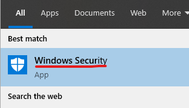
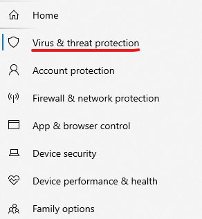
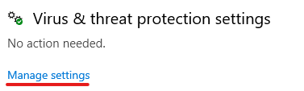
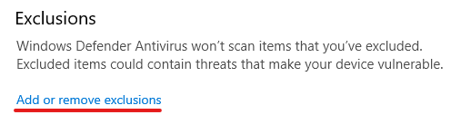
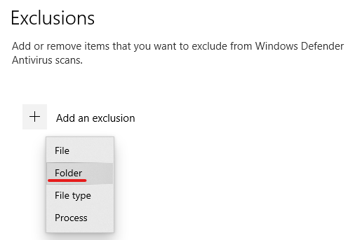
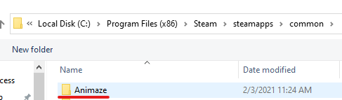
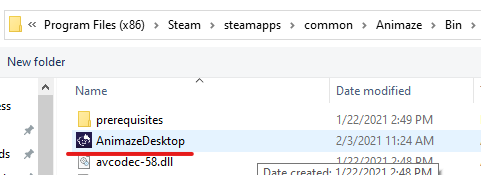

Animazeが起動しない場合、どうすれば良いですか？
Animazeのインストールで問題が発生した場合や、アプリが起動できない場合は、いくつかの手順でほとんどの一般的な問題を解決できます。
Animazeを開こうとすると、Windowsセキュリティなどのアンチウイルスソフトウェアがアプリをブロックする場合があります。そのような場合は、セキュリティソフトウェアでアプリをホワイトリストに登録し、インストールや起動を許可すればいいだけです。
次の手順でWindowsセキュリティのホワイトリストにAnimazeを登録します:
1.Windowsキーを押し、Windowsセキュリティと入力します

2.「ウイルスと脅威の防止」をクリックします

3.「ウイルスと脅威の防止」が開いたら、「設定の変管理」をクリックします

4.「除外」の項目の「除外の追加または削除」をクリックします

5.「除外の追加」をクリックし「フォルダー」を選択します。その後Animazeがインストールされているフォルダーを選択します。デフォルトのインストールフォルダーは、C:\Program Files (x86)\Steam\steamapps\common\Animaze です。


6.「除外の追加」をもう一度クリックし「ファイル」を選択します。その後Animazeの実行ファイル(AnimazeDesktop.exe)を選択します。通常、ファイルは C:\Program Files (x86)\Steam\steamapps\common\Animaze\Bin\AnimazeDesktop.exe にあります

ここではアバストのウイルス対策ソフトウェアを例に手順を説明します。その他のウイルス対策ソフトウェアでも手順はほぼ同じです。
1.アバストを開きます
2.アバストの設定を開きます
3.「一般」タブをクリックします
4.「例外」をクリックします
5.「例外を追加」をクリックし、Animazeを選択して例外項目に追加します。可能であれば、Animazeの実行ファイル(AnimazeDesktop.exe)と、Animazeのインストールフォルダーを例外項目に追加してください。
注意:お使いのセキュリティソフトウェアで特定の国からのトラフィックがブロックされる場合、ドイツからのトラフィックを許可するように設定してください。Animazeのいくつかのサーバーはドイツに設置されているため、ドイツからのトラフィックがブロックされているとAnimazeを使用できません。